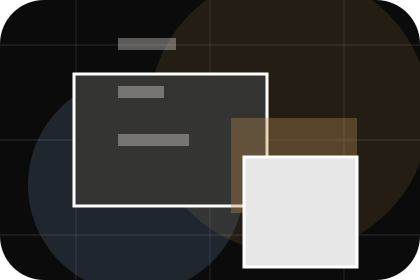
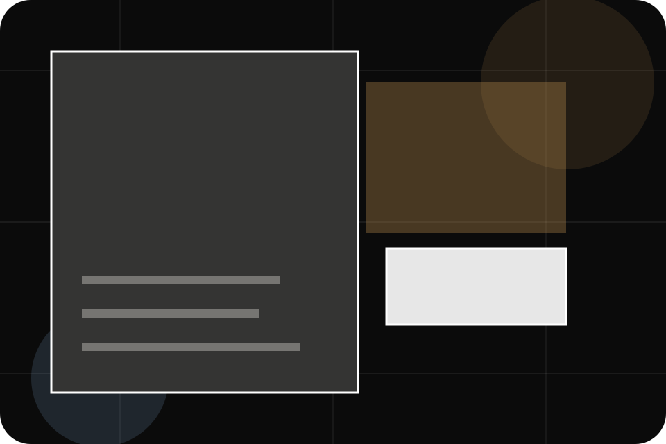
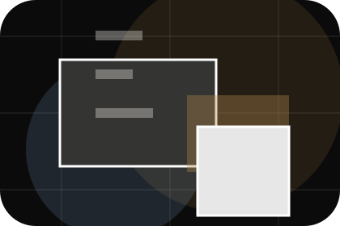
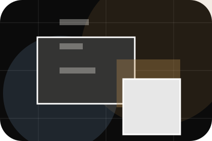
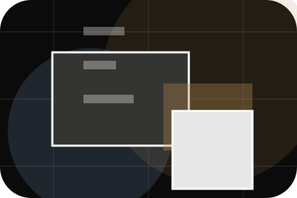
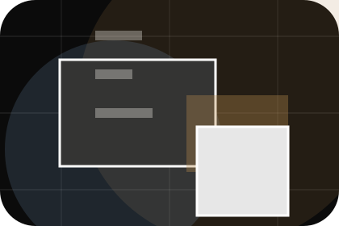
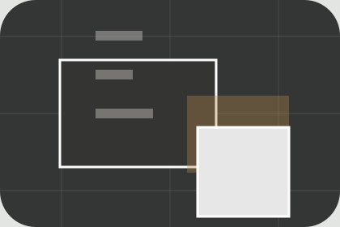

Fit
Who the offer is for, which scope it suits, and when a different route may be better.
Pricing / 01
Pricing opens as a clear travel decision hub: what Atlas offers, who it helps, why it matters, and which route to take first.
The first screen combines positioning, proof, primary action, and fast internal navigation, so people can act immediately or compare the rest of the pricing route with context.
Immersive trip hero
Select the closest route and Atlas keeps the next step, proof, and follow-up expectation aligned with wanderlust and practical planning.

Pricing / 02
Packages makes commercial comparison easier by showing fit, scope, and terms before travel visitors ask for the next step.
The layout keeps price-sensitive decisions honest: it separates starting scope, fuller delivery, and ongoing support so the visitor can ask a sharper question.
View Pricing
Who the offer is for, which scope it suits, and when a different route may be better.

What is included clearly enough for travel, tourism & destination experiences visitors to compare value without hidden jargon.

The practical details that should be confirmed before someone asks to plan a trip.
Who the offer is for, which scope it suits, and when a different route may be better.
ScopedWhat is included clearly enough for travel, tourism & destination experiences visitors to compare value without hidden jargon.
QuotedThe practical details that should be confirmed before someone asks to plan a trip.
RetainerPricing / 03
Quotes converts customer proof into a useful buying signal: the problem, the experience, and what changed afterward.
Proof stays believable by focusing on situation, service experience, and practical change rather than vague praise or unsupported results.
Explore PricingWhat the visitor needed before choosing Atlas, written with enough context to feel real.
How the service, product, or support felt during the process, not just that it was good.
What became easier to decide, complete, buy, book, or trust after the interaction.
Pricing / 04
Deposits makes commercial comparison easier by showing fit, scope, and terms before travel visitors ask for the next step.
The layout keeps price-sensitive decisions honest: it separates starting scope, fuller delivery, and ongoing support so the visitor can ask a sharper question.
Explore Pricing
Who the offer is for, which scope it suits, and when a different route may be better.
Pricing / 05
Inclusions makes commercial comparison easier by showing fit, scope, and terms before travel visitors ask for the next step.
The layout keeps price-sensitive decisions honest: it separates starting scope, fuller delivery, and ongoing support so the visitor can ask a sharper question.
Explore PricingWho the offer is for, which scope it suits, and when a different route may be better.
What is included clearly enough for travel, tourism & destination experiences visitors to compare value without hidden jargon.
The practical details that should be confirmed before someone asks to plan a trip.
Pricing / 06
Exclusions makes commercial comparison easier by showing fit, scope, and terms before travel visitors ask for the next step.
The layout keeps price-sensitive decisions honest: it separates starting scope, fuller delivery, and ongoing support so the visitor can ask a sharper question.
Explore PricingWho the offer is for, which scope it suits, and when a different route may be better.
What is included clearly enough for travel, tourism & destination experiences visitors to compare value without hidden jargon.
The practical details that should be confirmed before someone asks to plan a trip.
Pricing / 07
Payment makes commercial comparison easier by showing fit, scope, and terms before travel visitors ask for the next step.
The layout keeps price-sensitive decisions honest: it separates starting scope, fuller delivery, and ongoing support so the visitor can ask a sharper question.
Explore PricingAtlas frames payment around fit, scope, and terms so visitors can compare cost without losing the outcome.
Plan TripPricing / 09
Clarity makes commercial comparison easier by showing fit, scope, and terms before travel visitors ask for the next step.
The layout keeps price-sensitive decisions honest: it separates starting scope, fuller delivery, and ongoing support so the visitor can ask a sharper question.
Explore PricingWho the offer is for, which scope it suits, and when a different route may be better.
What is included clearly enough for travel, tourism & destination experiences visitors to compare value without hidden jargon.

The practical details that should be confirmed before someone asks to plan a trip.
Pricing / 10
Atlas closes the pricing route with a clear action, a quick reminder of the value, and a low-friction way to plan a trip.
Visitors who are ready can use the primary action. Visitors who are still comparing can scan the section links, proof, and support routes before they plan a trip.
Plan TripThe final block keeps the choice simple: act now, compare one more proof route, or send enough detail for a focused response.
Plan Tripwanderlust and practical planning
A travel-planning site with dark editorial hero, trip story cards, itinerary accordions, and bespoke enquiry. Pricing ends with a direct path to plan a trip, plus enough context for visitors who still need to compare.

Plan TripTravel plans may depend on visas, health rules, weather, operator availability, and insurance terms.